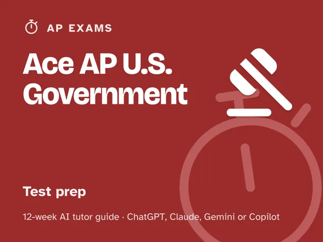

Ace AP U.S. Government
$29Instant download: a PDF to read, a browser copy, and the AI-tutor file you hand straight to any AI assistant.Buy it on Etsy →
Take the free placement check first: 15 minutes, and it names the week to start at.
Stop highlighting the textbook and hoping the 14 required cases stick. This 12-week plan starts with an honest diagnostic that maps your Multiple Choice and all four Free-Response question types (Concept Application, Quantitative Analysis, SCOTUS Comparison, and the Argument Essay) into solid, shaky, and missing, then spends the middle weeks drilling exactly the gaps that map found: the branches and institutions, federalism, civil liberties and civil rights, political participation, the 13 required Foundational Documents (including the four added for 2026-27), and all 14 required Supreme Court cases. An AI tutor diagnoses before it teaches and never just hands you the answer or writes your essay for you. The last three weeks are full, timed practice with a rubric-honest review of every miss, ending in a dress rehearsal and an honest score. No official test content, no score guarantees, just a real plan, real rubrics, and a coach that keeps you honest.
What you get
This is a deep, digital guide: a full 12-week curriculum, not a checklist. You lead one ~60-minute session each week (weeks 9, 10, and 12 are full-length timed sittings that run longer, like the real exam), fully scripted: every step is timed and written out for you, so no prior expertise (in the subject or in using AI) is needed. - 12 weekly sessions, each built the same deep way: a plain-language concept explanation, a concrete worked example, a minute-by-minute session plan with the AI-tutor prompts built in, a "show me" checkpoint to confirm the concept actually landed, a list of common mistakes to watch for, and practice to lock it in. - A "Never used an AI chat assistant? Start here" onboarding that takes a complete beginner from zero to ready in about five minutes: how to open a free AI assistant (ChatGPT, Claude, Copilot, or Gemini all work) and paste your first prompt. No paid plan required. - An orientation that sets the weekly rhythm and the one rule that makes this work: review every miss and every lost rubric point until you can explain the "why," not just what the stronger answer would have been. It also names the one rule worth repeating up front: use the official College Board materials as your source of truth; this pack has no guarantees. - Four rescue prompts in the front matter for when things go sideways: one for when you're stuck and frustrated, one that stops the tutor from handing you answers or writing your essay, a plateau-breaker for when a section score stalls, and an honest check that you truly understand every miss rather than just recognizing the right answer. - A personal gap map you build in week 1 and revisit in week 12 to see exactly what moved.
The 12 weeks
- The Diagnostic: Your Real Starting Line
- Meet the Exam and the Foundational Documents
- The Branches and Institutions
- Federalism
- Civil Liberties and Civil Rights
- Ideology, Beliefs, and Political Participation
- The Required Supreme Court Cases: Deep Review and Comparison
- The Argument Essay and Multiple-Choice Strategy
- Timed Practice #1: Full Multiple-Choice Section
- Timed Practice #2: Full Free-Response Section
- Timed Practice #3: Targeted Retest on Your Weakest Area
- Full Dress Rehearsal and the Plan Ahead
Who it's for
Students taking AP U.S. Government and Politics who want a real plan instead of a stack of case flash cards. It's self-directed (built to be run by the student) and works whether you're starting from a strong base or feel behind; week 1 finds out which sections actually need the work.
Why this instead of a free chatbot
A raw chatbot will happily write your Argument Essay for you, which feels productive but teaches you nothing about your actual weak spots, and it won't be there on test day. This pack ships what a chatbot alone lacks: an up-front diagnosis that tells you what to study first, a structured 12-week progression instead of random case-memorizing, real timed practice under section time limits (not untimed noodling), and a forced rubric-honest review of every miss for the underlying cause: content gap, confused case, or timing. A prep book gives you the same 400 pages regardless of what you actually need; this pack adapts to your gap map.
FAQ
- Is this official College Board or AP content? No. This pack is not affiliated with, endorsed by, or connected to the College Board, the AP Program, or any other test maker, and it contains no official or leaked exam questions. Use it alongside official materials (College Board AP Classroom, official released exams and rubrics) as your source of truth for real questions, real rubrics, and the current exam format.
- Will this guarantee a certain score? No. No pack, book, or tutor can guarantee a score, AP credit, or an admission outcome, and this one won't claim to. What it offers is an honest diagnostic, focused practice on your actual gaps, and real timed, rubric-scored review; the result depends on the work you put in.
- Which AI does it use? What if I've never used one before? It works with any modern AI assistant (ChatGPT, Claude, Copilot, or Gemini), and the free version of any of them is enough; no paid plan is required. If you've never opened an AI chat assistant before, the guide's first section walks you through setup in about five minutes, start to finish.
- Do I need to already know my score or which sections are weak? No. Week 1 is the diagnostic. You start wherever you actually are, not where you assume you are.
- Does it cover all 14 required Supreme Court cases and all 13 Foundational Documents? Yes. Week 2 introduces the Foundational Documents, week 7 is a dedicated deep review and comparison drill across all 14 required cases, and both keep showing up in the timed practice weeks. The lists change from time to time, so confirm them in the current official course description.
- Can I use it outside the US? Yes. The guide is written in US English, and every prompt tells the AI to use your country or region for spelling and examples. The exam content (the required documents and cases) is the same everywhere, and the guide reminds you to confirm local test logistics with your AP coordinator.
- What if my FRQ score plateaus? The guide includes a plateau rescue prompt built for exactly this: it looks at the actual rubric points you're losing and changes the approach instead of repeating the same drills.
- Refunds? Standard marketplace refund policy applies.
$29Instant download: a PDF to read, a browser copy, and the AI-tutor file you hand straight to any AI assistant.Buy it on Etsy →